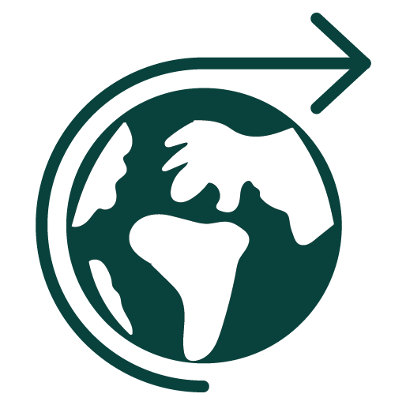

Bewust Bakkie
Welkom bij "BewustBakkie" - een website gebasseerd op het koffiebedrijf 'Wakuli'. Jouw ultieme bestemming voor alles wat met duurzaam geproduceerde koffie te maken heeft! Ontdek en geniet van verhalen, tips en een quiz die je begeleiden op een reis naar duurzaam koffieplezier. Proost op bewust genieten!
Het doel
Wakuli, een duurzame koffiewinkel, heeft als doel de problemen in de
koffie-industrie aan te pakken.
De dominantie van enkele grote
koffiegiganten leidt tot oneerlijke prijzen en slechte kwaliteit
koffie. Dit heeft negatieve gevolgen voor koffieboeren, de planeet
en consumenten. Wakuli wil dit veranderen door directe relaties met
boeren, het waarborgen van topkwaliteit, eerlijke prijzen en
investeringen in duurzame productie.
Het bedrijf streeft ernaar om
'Bad Coffee' te elimineren en specialty coffee met eigen karakter en
zorgvuldige productiepraktijken de norm te maken.
